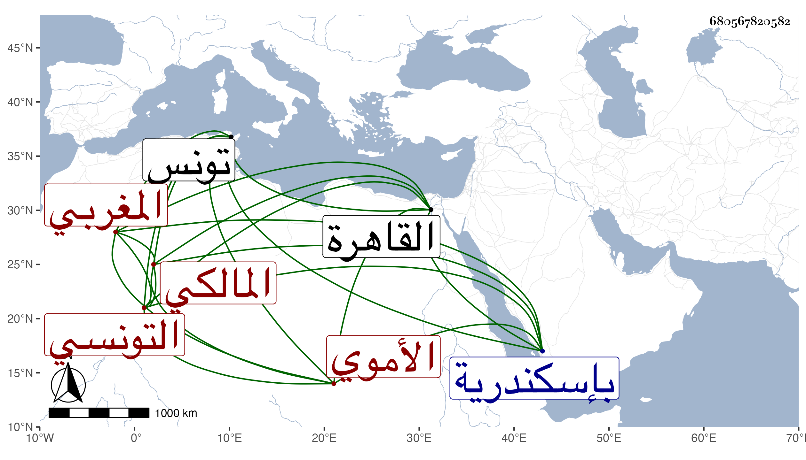

0902Sakhawi.DawLamic.ITO20230111-ara1.EIS1600.680567820582
Biography ID: 680567820582
1006
محمد بن أحمد بن حسن وقيل موسى بن عبد الواحد أبو عبد الله الأموي المغربي التونسي المالكي ويعرف بالقباقبي . ولد في سنة ست وتسعين وسبعمائة يوم استقرار أبي فارس في مملكة تونس وقدم القاهرة فحج وسمعت من نظمه قوله في شيخنا :
| لي مالك مهما استعنت به سمح | وإذا توجه في مناجدة نجح |
| أنبئت عنه أن في سيادة | فاعلم بقلبك أنه نبأ رجح |
وقد سبقه فقيهنا الشمس محمد بن أحمد السعودي الآتي لما فيهما وكذا مدح تغرى برمش الفقيه بقصيدة همزية سمعها منه صاحبنا التقي القلقشندي حسبما قرأته بخطه وكتب عنه أيضا غيره من أصحابنا . مات في رجب سنة خمسين بإسكندرية رحمه الله .
